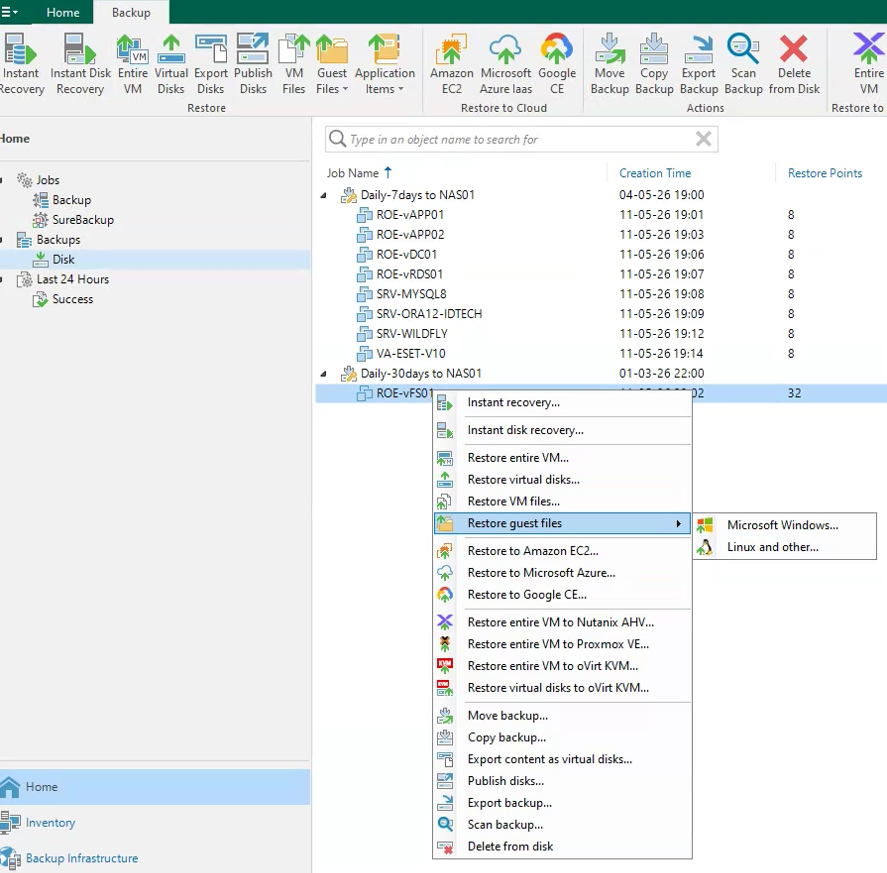
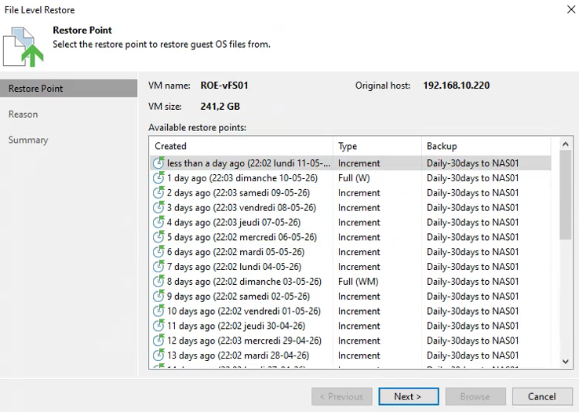

Tutorial – Backup & Disaster Recovery
This check verifies that backup restore operations are functional.
A successful backup does not guarantee that data can actually be restored.
Restore issues can impact:
Open the backup console and navigate to:
Home → Backups → Disk
Select a backup and start a restore operation.

Verify that:
